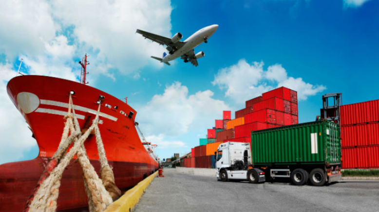

Air Import
With a comprehensive range of air import services, we offer consolidation/Deconsolidation and back to back services as and when required. We have built an extensive network of agents that makes us able to provide secure, efficient and timely delivery of Import. The vast number of Import range covered by us and the large volumes handled by us enable us to consolidate direct containers from specific locations which in turn enables us to control transit time and cost. We provide efficient import service to our importers. The alacrity with which we work shows our ability to handle fragile and sensitive shipments.
We have a committed network of integrated air and ground services that enables us to handle from pick up to prompt delivery. The services we offer in Air Import include
- Documentation
- Customs and Airport Customs declarations
- Local Forwarding and Transportation
- Door-to-Door Delivery
- Sea-Air/Air-Sea Transshipment
- Break-bulk Air Import
- Effective Space Solutions
- Competitive Freight Rates
- Committed Transit Times
- Excellent Rapport with major Airlines
- Consolidation Services
- Specialized services for High value / Fragile / Over dimensional / Hazardous Goods
Air Export
Our Air export services are from Singapore and Malaysia to anywhere in the world. We Offer worldwide Air Export services in association with our extensive international network of Agents and Associates. We tailor our services to Customer’s needs from Air Export services precisely for each and every shipment. Whether it is direct flights with reserved cargo capacity and constant supervision, regularly consolidated air -cargo departures, or special projects. We can meet any kind of requirement regarding Air Export. Our services in Air Export include
- Domestic Pickup
- Multimodal Transportation during Trans-Shipment
- Consolidation and Deconsolidation Services
- Door-to-Door Delivery Services
- Documentation
- Customs Declaration
- Competitive Freight Rates
- Committed Transit Times
- Excellent Rapport with major Airlines
Sea Import
We Offer complete Sea import solutions to our valued customers in Singapore and Malaysia. Our clients can depend on us for timely and safe delivery of Cargo. We are reckoned for our commitment, fair business practices, and rich experience. Our well-connected network and potential to deal with shipping requirements have made us a reckoned service provider of sea Import services and have won many a clients.As a Customer centric organization, our reputation is primarily based on the quality of services we offer. All our services are rendered by trained professionals who are specifically trained in their domain. Our professionals take special measures to ensure proper execution of the Import services rendered, safety of the Cargo and convenience of our Customers. Our Services in Sea Import include
- Door Pickup from Origin
- Multimodal Transportation to the Port of Discharge
- Sea Transportation to Destination
- Door Delivery to the Customer
- LCL and FCL Multi country Consolidation services
- Handling and clearing Sea Import Documents
- Customs declaration of Sea Import
- Break-Bulk Services
Sea Export
We are well equipped and expertise in handling Sea Export from Singapore and Malaysia to anywhere in the world. Experience is what sets us apart from other similar service providers. We have an entire family of services to suit a variety of our customer needs. With fast transit periods, optimum prices, prompt arrival and departure we give you with a reliable sea Export service that provides solutions to almost all your needs. We have clearly defined processes in place which gives you reliability as well as saves costs. Our services in Sea Export include
- LCL/FCL services to destinations all over the world
- Consolidation/De services at major ports
- Port-to-Port and Door-to-Door Services
- Efficient and rapid customs administration for all products
- Reserved space on major ocean carriers through preferential Space Allocation at very competitive rates
- Reliable and Hassle Free Customs declarations
Let’s move your business forward.
Talk to our team about your logistics requirements.